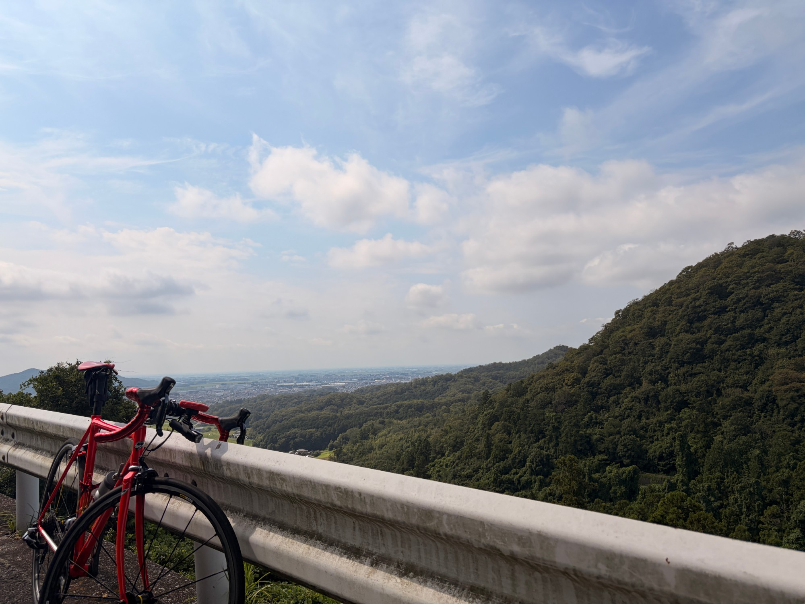
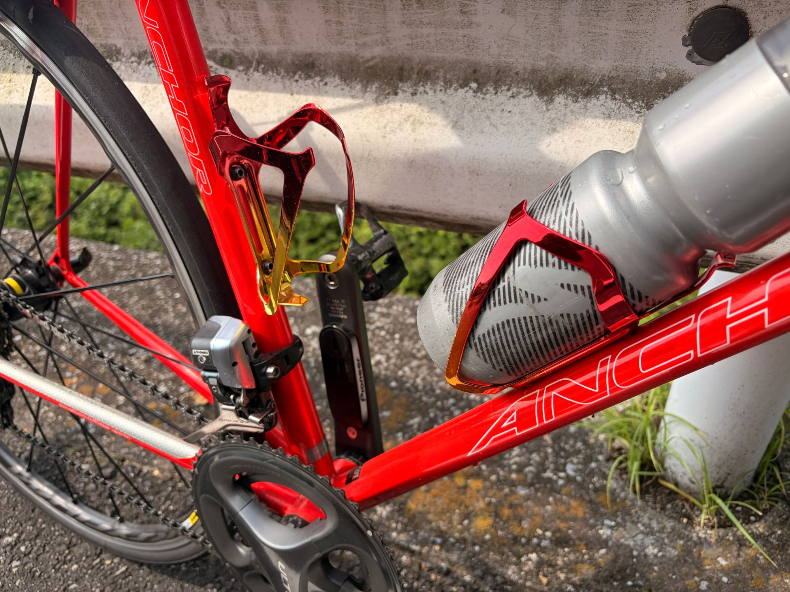
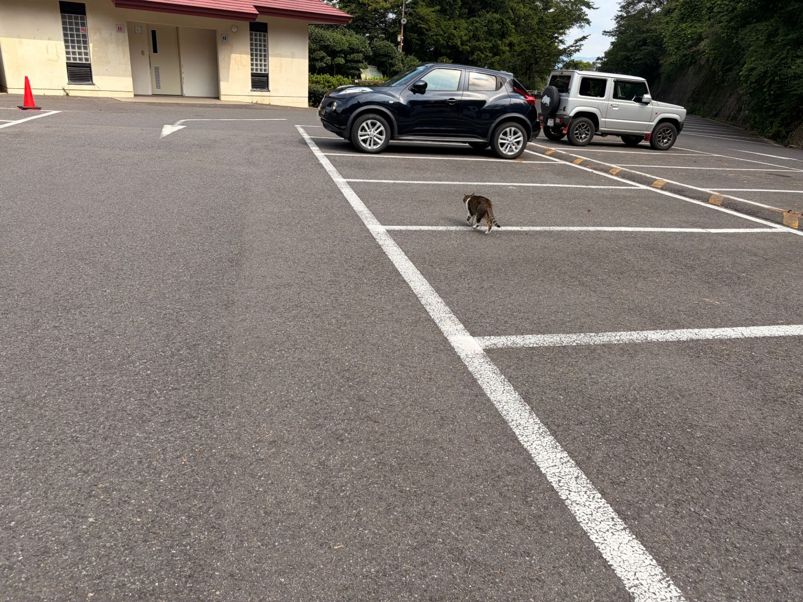

久しぶりに唐沢をゆっくり。ANCHORだと同じ山が少し違って見える
今日は唐沢へ。ただし、いつもの高強度ではない。久しぶりにかなりゆっくり登った。昨日は渡良瀬遊水地で60秒ON／30秒OFF。普段とは違う平坦での高負荷だったこともあって、今日はアクティブレスト寄りの日にした。
選んだのはAethos2ではなく、ANCHOR RNC7。こういう「のんびり走る日」は、こっちが妙にしっくりくる。

21.91km・NP206W・TSS54.8
- 全体21.91km / 59分20秒 / 獲得319m / 運動負荷73
- 負荷平均150W / NP206W / IF0.748 / TSS54.8 / 最大614W / 20分最大205W
- 心拍・回転平均116bpm / 最大151bpm / 平均80rpm
- 環境平均31.4℃ / 最高35.0℃ / 推定発汗761ml
- 効果有酸素TE2.8 / 無酸素TE0.1
Garminの判定は「ベース」。昨日のような高強度とは、かなり違う内容になった。ちなみに最高気温は35.0℃である。ゆっくり登っていても、暑いものは暑い。
久しぶりに、唐沢をゆっくり登る
最近の唐沢は、30/30だったり、60/30だったり、友人と会話しながら何本も登ったり。何かしらテーマを持って走ることが多かった。でも今日は「普通に登る」だけ。これが意外と新鮮だった。
パワーを見て追い込むわけでもなく、タイムを縮めにいくわけでもなく、とにかく淡々と登る。唐沢ってこんな感じだったな。そんな感覚で走れた。

のんびり走る日はANCHORがちょうどいい
今日はANCHOR RNC7。Aethos2とは当然かなり違う。速く走るならAethos2、高強度の日もAethos2。でも、こういう日になるとANCHORがいい。のんびり登って、景色を見て、止まって写真を撮る。そういう走り方には、こっちの方が合っている気がする。
ロードバイクは速く走るための道具だけど、「今日は頑張らなくていい」と思える自転車があるのも悪くない。

止まって写真を撮っていて改めて思ったのだが、ボトルケージがフレームの色とかなり合っている。派手ではある。でもフレーム自体が赤いので、全体として収まっている。こういう細かいところが気に入っていると、それだけでテンションがあがる。性能とは全然関係ない。でも、自転車はそういうのでいいと思う。
猫はいた。でも逃げられた
唐沢といえば猫である。今日もいた。いたけれど、逃げられた。写真に残ったのは、こちらから離れていく後ろ姿だけである。

前回はそれなりに撮れた気がするけれど、今日は完全に警戒された。まあ、猫側からすれば知らない自転車乗りが近づいてきただけなので、当然といえば当然である。
数字としては「完全な回復走」ではない
- 心拍ゾーンZ1 15分40秒 / Z2 21分35秒 / Z3 15分34秒 / Z4は2秒 / Z5はゼロ
- パワーゾーンZ1 26分11秒 / Z4 9分40秒 / Z5 4分11秒 / Z6 1分19秒 / Z7 13秒
心拍はかなり低い。ゾーン1とゾーン2だけで全体の6割以上あって、ゾーン4はわずか2秒、ゾーン5はゼロ。心肺的にはかなり余裕があった。
ただしパワーを見ると、ゾーン5以上が合計5分43秒入っている。登りなので、完全な回復走とはいかない。結果としてTSSは54.8。最初にイメージしていた「かなり軽いアクティブレスト」よりは高かった。それでも体感として追い込んだ感じはない。今日は回復走というより、軽めの通常ライド。そのくらいが一番近い。
昨日の60/30は、脚のどこか一か所が疲れるというより身体全体が重い、という変わった疲れ方だった。今日はそれを抜くために走っている。高いパワーを揃える必要はないし、短い坂で少し数字が上がっても気にしない。全体として楽に走れればいい。こういう日を挟むと、高強度の日と普通に乗る日の差がはっきりする。毎日メニューをやる必要はないが、完全に乗らない必要もない。今日くらいの距離と時間は、ちょうどよかったと思う。
今日やってみて思ったこと
高強度の翌日に、ANCHORで唐沢をゆっくり。こういう日もやっぱり必要だと思った。数字を揃えなくていい。登りでタイムを狙わなくていい。止まって自転車を眺めてもいい。猫に逃げられてもいい。そして「この自転車、やっぱりかっこいいな」と思えれば十分である。
明日はまた少ししっかり乗る予定だが、今日の時点では細かいメニューまでは決めない。脚の状態を見ながら、その日の走り方を選ぶ。土曜には高強度の予定もあるので、明日は「しっかり乗るけれど、やり切りすぎない」くらいがよさそうだ。
練習としては地味な日である。でも、自転車を続ける上ではこういう日の方が大事なこともある。今日はそんな一日だった。
次に見るポイント
- 疲労の抜け昨日の「身体全体が重い」感じが明日までにどこまで抜けるか
- 明日の判断脚の状態を見てから走り方を決められるか。やり切りすぎないか
- 週末土曜の高強度に向けて余力を残せているか
- バイクの使い分け軽い日はANCHOR、高強度はAethos2という分け方が今後も機能するか